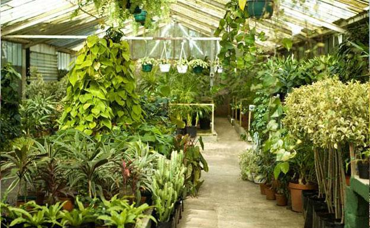
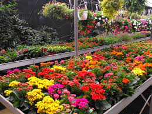
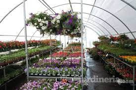
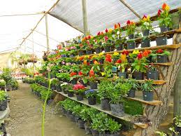
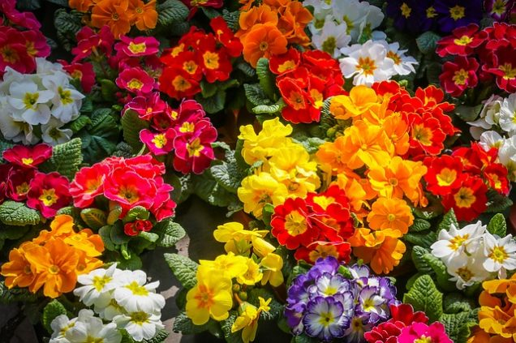

Las plantas tienen el poder de transformar nuestro estado anímico ya que minimizan el estrés, mejoran la productividad de nuestro día a día, reducen la fatiga y promueven el bienestar general. También fortalecen nuestro vínculo con naturaleza. Además, purifican el aire mediante la fotosíntesis, modificando el dióxido de carbono en energía limpia y favorable para todos
    